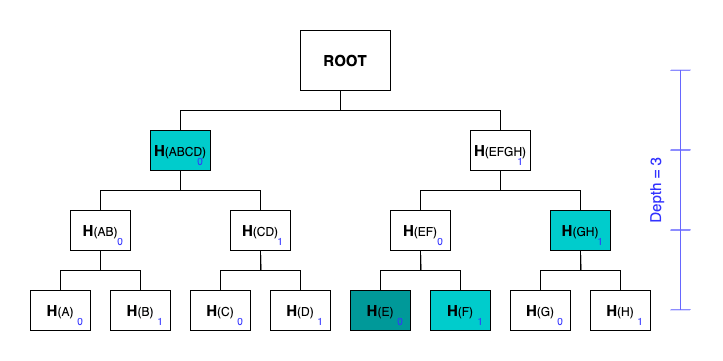

Introduction
Learning zkp with contents base on:
Source code, including this book, is available at github.com/trangnv/zkclass
Getting started with circom
Circom: Circuit Compiler
1. Compilation
hello_world.circom: the simple circuit that checks that c is the multiplication of a and b.
pragma circom 2.0.0;
/*This circuit template checks that c is the multiplication of a and b.*/
template Multiplier2 () {
// Declaration of signals.
signal input a;
signal input b;
signal output c;
// Constraints.
c <== a * b;
}
component main = Multiplier2();
To compile:
cd code/week1/circuits
circom hello_world.circom --r1cs --wasm --sym -o hello_world
That will generate
hello_world.r1cscontains the constraints of the circuit in binary format, it's like a representation of the circuit.hello_world.symhello_world_jsdir contains Wasm code and other files needed to generate the witness.
R1CS info
To print the R1CS info, run the following command:
snarkjs r1cs info hello_world/hello_world.r1cs
[INFO] snarkJS: Curve: bn-128
[INFO] snarkJS: # of Wires: 4
[INFO] snarkJS: # of Constraints: 1
[INFO] snarkJS: # of Private Inputs: 2
[INFO] snarkJS: # of Public Inputs: 0
[INFO] snarkJS: # of Labels: 4
[INFO] snarkJS: # of Outputs: 1
2. Trusted setup and verification key generation in Groth16
Phase 1, start a new powers of tau ceremony
snarkjs powersoftau new bn128 14 pot14_0000.ptau -v
The parameter after new indicates type of curve you wish to use, in this case bn128. At the moment, bn128 and bls12-381 are supported.
The parameter 14 indicates the size of the ceremony, in this case is 2^14 = 16384. The maximum value supported here is 28, which means you can use snarkjs to securely generate zk-snark parameters for circuits with up to 2 ^ 28 (≈268 million) constraints.
But you dont usually generate this by yourself. There are a trusted setup ceremonies done by the community and ready to be used, you can find them for example powersOfTau28_hez_final_10 or here
Phase 2
Because Groth16 protocol requires circuit-specific setup, after having the ptau file, we need to run the phase 2 of the ceremony to generate the final zkey file.
- Start new zkey
snarkjs groth16 setup hello_world/hello_world.r1cs powersOfTau28_hez_final_10.ptau hello_world/circuit_0000.zkey
- Contribute to the phase 2 of the ceremony:
snarkjs zkey contribute hello_world/circuit_0000.zkey hello_world/circuit_final_g16.zkey --name="1st Contributor Name"
- Get a verification key in json format
snarkjs zkey export verificationkey hello_world/circuit_final_g16.zkey hello_world/verification_key_g16.json
- To see more information about the zkey file:
snarkjs zkej hello_world/circuit_final_g16.zkey hello_world/circuit_final_g16.zkey.json
3. Some restriction on circom circuits
While circom allows writing the constraints that define the arithmetic circuit, all constraints must be quadratic of the form A*B + C = 0, where A, B and C are linear combinations of signals.
-
Linear expression: an expression where only addition is used. It can also be written using multiplication of variables by constants. E.g.
2*x + 3*y + 2is allowed, as it is equivalent tox + x + y + y + y + 2 -
Quadratic expression: it is obtained by allowing a multiplication between two linear expressions and addition of a linear expression: A*B - C, where A, B and C are linear expressions. E.g.
(2*x + 3*y + 2) * (x+y) + 6\*x + y – 2 -
As the result,
c <== a + bis not a constraint.d <== a * b * cis not allowed.
4. PLONK vs Groth16
- As oppose to Groth16, PLONK does not require circuit-specific trusted setup. Recall in Groth16, we need to run the phase 2 of the ceremony to generate the
final zkeyfile, we dont need that in PLONK, we can use the sameuniversal setupfor all circuits. This is a huge advantage of PLONK over Groth16.
# Generate the verification key
snarkjs plonk setup hello_world/hello_world.r1cs powersOfTau28_hez_final_10.ptau hello_world/circuit_final_plonk.zkey
# Get a verification key in json format
snarkjs zkey export verificationkey hello_world/circuit_final_plonk.zkey hello_world/verification_key_plonk.json
-
But there is a tradeoff, Proof size
-
Run these commands to generate proof in Groth16 and PLONK
With input input.json: { "a": 22, "b": 33 }
# witness generation
node hello_world/hello_world_js/generate_witness.js hello_world/hello_world_js/hello_world.wasm hello_world/input.json hello_world/witness.wtns
# proof generation groth16
snarkjs groth16 prove hello_world/circuit_final_g16.zkey hello_world/witness.wtns hello_world/proof_g16.json hello_world/public_g16.json
# proof generation plonk
snarkjs plonk prove hello_world/circuit_final_plonk.zkey hello_world/witness.wtns hello_world/proof_plonk.json hello_world/public_plonk.json
- Comparison: Proof size of Groth16 is 803 bytes, while PLONK is 2 KB.
5. Testing circuits
Verifying with snarkjs CLI
snarkjs groth16 verify hello_world/verification_key_g16.json hello_world/public_g16.json hello_world/proof_g16.json
[INFO] snarkJS: OK!
snarkjs plonk verify hello_world/verification_key_plonk.json hello_world/public_plonk.json hello_world/proof_plonk.json
[INFO] snarkJS: OK!
Verifying with smart contract
The verifier can be a smart contract, so we can use existing framework to test the circuits.
To export the verifier smart contract:
# groth16
snarkjs zkey export solidityverifier hello_world/circuit_final_g16.zkey ../verifier_contracts/contracts/hello_world_g16.sol
Now move to verifier_contracts dir and run some unit tests for our verifier/circuits:
cd ../verifier_contracts
npm install
npx hardhat test
Running time of unit tests
Circom libraries
Circomlib
LessThan
pragma circom 2.0.0;
include "bitify.circom";
template LessThan(n) {
assert(n <= 252);
signal input in[2];
signal output out;
component n2b = Num2Bits(n+1);
n2b.in <== in[0]+ (1<<n) - in[1];
out <== 1-n2b.out[n];
}
Walk through the circuit and understand how it works, with n = 32, in[0] = 2, and in[1] = 3
-
The
assert(n <= 252)condition is satisfied because n = 32 < 252 -
in[0] + (1<<n) - in[1] = 2 + (1<<32) - 3=(2 + 4294967296 - 3)=42949672951<<n: represents a bitwise left shift operation, where 1 is shifted n positions to the left. E.g. 1 << 3 = 1000 in binary
-
component n2b = Num2Bits(33)- n2b.in = 4294967295
- n2b.out is the 33 bits binary representation of 429496729
-
out <== 1-n2b.out[n];output of the circuit is the last bit of n2b.out, which is 0 if in[0] < in[1], otherwise 1.
circomlib-matrix with puzzle
Merkle for Privacy
prove that you are a member of a group without revealing your identity
The circuit uses Merkle Proof as Proof of Membership. Each group is represented by a Merkle root. A member of the group can prove that he is a member of the group by providing a Merkle Proof. I.e. he knows the leaf, the pathIndices and the siblings that lead to the public Merkle root, without revealing the leaf.
template MerkleTreeInclusionProof(nLevels) {
signal input leaf;
signal input pathIndices[nLevels];
signal input siblings[nLevels];
signal input root;
component poseidons[nLevels];
component mux[nLevels];
signal hashes[nLevels + 1];
hashes[0] <== leaf;
for (var i = 0; i < nLevels; i++) {
pathIndices[i] * (1 - pathIndices[i]) === 0;
poseidons[i] = Poseidon(2);
mux[i] = MultiMux1(2);
mux[i].c[0][0] <== hashes[i];
mux[i].c[0][1] <== siblings[i];
mux[i].c[1][0] <== siblings[i];
mux[i].c[1][1] <== hashes[i];
mux[i].s <== pathIndices[i];
poseidons[i].inputs[0] <== mux[i].out[0];
poseidons[i].inputs[1] <== mux[i].out[1];
hashes[i + 1] <== poseidons[i].out;
}
root === hashes[nLevels];
}
Merkle Trees
-
Hash function is Poseidon which is included in circomlib
-
nLevelsis the number of levels in the tree, or the depth of the tree. The number ofleaves = 2^nLevels -
leafis the hash of the original data -
pathIndicesis the position of the leaf in the tree, an array withnLevelslength, each element is either 0 or 1 -
siblingsis the hashes of the nodes on the path from the leaf to the root. The number ofsiblings=nLevels -
Given the
leaf, thepathIndicesand thesiblings, the circuit whould be able to compute the root

An example: tree with depth = 3, for leaf H(E), pathIndices is [0,0,1] and siblings is [H(F), H(GH), H(ABCD)]
Hash functions benchmarking
Some hash functions are more SNARK friendly than others, but
- Implementations of hash functions written in circom, including: keccak, mimc, pedersen, poseidon, sha256.
| keccak | sha256 | pedersen | mimc | poseidon | |
|---|---|---|---|---|---|
| # of constraints | 151357 | 29891 | 964 | 660 | 213 |
STARK
Two of the most compelling zero-knowledge technologies in the market today are zk-STARKs and zk-SNARKs. What are the differences between them? The T and the N, Scalable Transparent and Succinct Non-interactive, respectively.
STARK is mostly utilized by STARKWARE, for app specific rollups STARKEx and recently for StarkNet, a permissionless STARK-based L2 platform.
The importance tradeoffs between STARKs and SNARKs is: STARKs do not require a trusted setup, but the proof size is much larger than SNARKs.

The diagram is taken from Vitalik's blog post
Starknet architecture
I am curious about how L1 smart contract verifies STARK proofs and wrote on the Starknetbook Verifiers in Solidity but that's not even scratching the surface. The task is even more daunting when knowing that SHARP (SHARe Prover) aggregates multiple Cairo programs from different users (StarkEx, Starknet, and external users through the Cairo Playground), each containing different logic. These Cairo programs are then executed together, generating a single proof common to all the programs, it is initially sent to a STARK Verifier program written in Cairo, before sending the proof to the Solidity Verifier in Ethereum 🤯

So is there a way to prove and verify and single Cairo program? Yes.
Giza
Giza leverages the Winterfell library to prove and verify the execution of programs running on the Cairo VM. I believe that it is being used in ZeroSync, a STARK proof to sync a Bitcoin full node in an instant.
Running an example
Cairo VM
Cairo VM is the virtual machine for the Cairo language. The one using here is the Python version cairo-lang. There is breaking change from Cairo0 to Cairo1 and the VM doesn't seem to work with Cairo1 code yet (??? or I'm wrong), so the example will use the Cairo0 code.
%builtins range_check
from starkware.cairo.common.bool import TRUE, FALSE
from starkware.cairo.common.alloc import alloc
from starkware.cairo.common.math import abs_value
func compare_abs_arrays{range_check_ptr: felt}(
array_a: felt*, array_b: felt*, array_length: felt, iterator: felt
) -> (r: felt) {
if (iterator == array_length) {
return (TRUE,);
}
let abs_a = abs_value(array_a[iterator]);
let abs_b = abs_value(array_b[iterator]);
if (abs_a != abs_b) {
return (FALSE,);
}
return compare_abs_arrays(array_a, array_b, array_length, iterator + 1);
}
func fill_array(array: felt*, base: felt, step: felt, array_length: felt, iterator: felt) {
if (iterator == array_length) {
return ();
}
assert array[iterator] = base + step * iterator;
return fill_array(array, base, step, array_length, iterator + 1);
}
func main{range_check_ptr: felt}() {
alloc_locals;
tempvar array_length = 10;
let (array_a: felt*) = alloc();
let (array_b: felt*) = alloc();
fill_array(array_a, -7, -3, array_length, 0);
fill_array(array_b, 7, 3, array_length, 0);
let result: felt = compare_abs_arrays(array_a, array_b, array_length, 0);
assert result = TRUE;
return ();
}
-
Pseudo code:
-
Generates 2 arrays,
array_aandarray_b, with the same length and the same values, but with different signs. -
Compares the absolute values of the elements of the arrays and returns
TRUEif they are equal. -
We want to prove that the execution of the Cairo program was done correctly and the main function returns
TRUE.
-
-
Install the Cairo VM:
cd code/stark/cairo-example
python -m venv cairo-vm-venv
source cairo-vm-venv/bin/activate
pip install cairo-lang
To make sure that the Cairo VM is installed correctly and we are using the right binary, run which cairo-compile. It should return the path to the Cairo VM binary ...cairo-example/cairo-vm-venv/bin/cairo-compile
- Compile the Cairo program:
cairo-compile abs_value_array/abs_value_array.cairo --output abs_value_array/abs_value_array.json
- Run the program and generate the trace:
cairo-run --program=abs_value_array/abs_value_array.json --layout=small --memory_file=abs_value_array/memory.bin --trace_file=abs_value_array/trace.bin --print_info
# Valid choices for --layout are: 'plain', 'small', 'dex', 'recursive', 'starknet', 'recursive_large_output', 'all_solidity', 'starknet_with_keccak', 'dynamic'
Number of steps: 623 (originally, 623)
Used memory cells: 663
Register values after execution:
pc = 4:0
ap = 1:510
fp = 3:0
- Copy the example files to the Giza directory:
cp -r abs_value_array ../giza/tmp
Giza
- Install the Giza CLI:
cd ../giza
cargo install --path cli
- Generate the proof:
giza prove --trace=tmp/abs_value_array/trace.bin --memory=tmp/abs_value_array/memory.bin --program=tmp/abs_value_array/abs_value_array.json --output=tmp/abs_value_array/output.bin
Built domain of 2^12 elements in 0 ms
Evaluated constraints over domain of 2^12 elements in 42 ms
Converted constraint evaluations into 4 composition polynomial columns of degree 1023 in 4 ms
Built DEEP composition polynomial of degree 1023 in 18 ms
Computed 3 FRI layers from composition polynomial evaluations in 169 ms
Determined 54 query positions in 1423 ms
Built proof object in 0 ms
Proof size: 166.0 KB
Proof size: 166.0 KB
- Verify the proof:
giza verify --proof=tmp/abs_value_array/output.bin
Execution verified